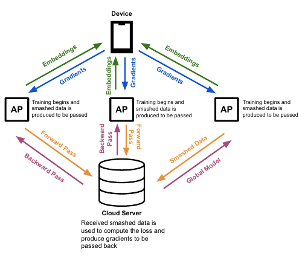
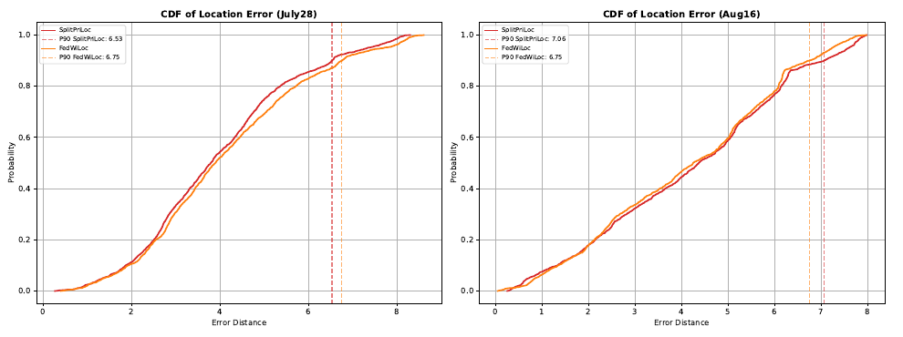
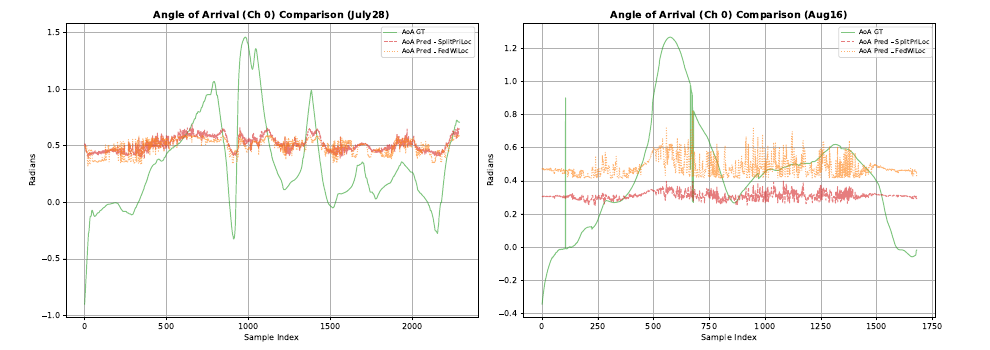
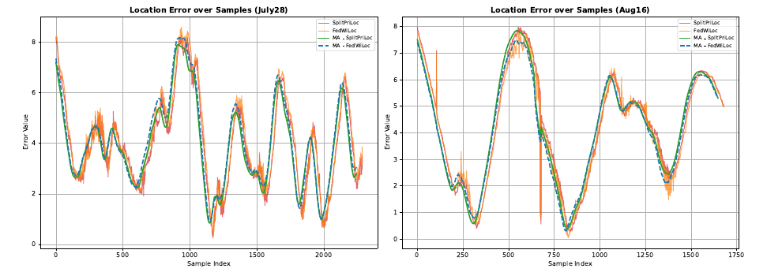
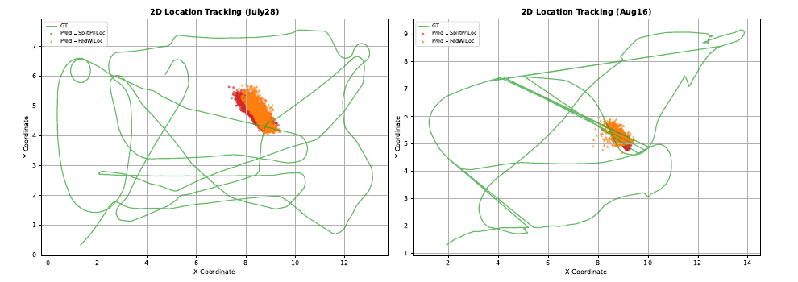

WIRELESS NETWORKS / MACHINE LEARNING
SplitPriLoc
Split Learning for Privacy Preserving Wi-Fi Based Indoor Localization
View project on GitHub ↗- Context
- Wireless localization research
- Project status
- Single-machine training simulation
- Tools & methods
- PyTorch · Hydra · MATLAB · Split learning
- My contribution
- Helped design the machine-learning algorithm.
My contribution & main result
I helped design the machine-learning algorithm for the split-learning localization approach.
The main reported result was comparable 90th-percentile localization error to the rerun FedWiLoc baseline: 6.53 versus 6.75 in the July 28 scenario, and 7.06 versus 6.75 in the August 16 scenario. SplitPriLoc performed slightly better in the first scenario and slightly worse in the second; the report does not specify a distance unit for these figures.

The idea
SplitPriLoc explores split learning in a Wi-Fi indoor localization pipeline derived from FedWiLoc’s open-source PriWiLoc implementation. Raw Channel State Information stays at the access points while intermediate representations cross the training boundary.
Inside the implementation
The supplied Python archive defines SplitLearningModel with client encoders, a shared server decoder, cut-layer gradient hooks, and weighted ray intersection. Training is simulated on a single machine; the network transfer between physical clients and server is an architectural boundary rather than a deployed transport in this implementation.
The project uses PyTorch, configuration through Hydra, and MATLAB preprocessing for CSI feature data. It builds on the existing FedWiLoc/PriWiLoc codebase.
Architecture & training
- ResNet34-based encoders process Angle-of-Arrival / Time-of-Flight images and produce 64-dimensional embeddings.
- A lightweight MLP decoder predicts angles, which are combined with known access-point positions to estimate a 2D location.
- During split training, access points forward cut-layer activations to the server; the server computes loss and returns gradients.
- Training used Adam, a learning rate of 5 × 10⁻⁵, batch size 32, and up to 50 epochs.
Evaluation
The team used two DLoc scenarios from Jacobs Hall: July 28 and August 16, each covering an 18 × 8 m environment with four access points. The second scenario adds rearranged furniture. FedWiLoc was rerun on the same reduced dataset for comparison.
Reported 90th-percentile location error: July 28: SplitPriLoc 6.53 versus FedWiLoc 6.75; August 16: SplitPriLoc 7.06 versus FedWiLoc 6.75. The figure labels this as error distance without an explicit unit.
The results are similar across the two systems, with SplitPriLoc slightly ahead in the first scenario and behind in the second. Angle and trajectory plots also show substantial deviation from ground truth, so comparable baseline performance should not be read as high absolute positioning accuracy.
Limits & next steps
The evaluation covers a subset of DLoc rather than the full benchmark. Direct measurements on resource-constrained hardware, broader deployment, and generalization tests remain future work. The report discusses resistance to membership inference and gradient inversion, but does not present attack-test results; keeping raw CSI local is not a complete privacy guarantee.
Team
Afif Zughayer, Kareem Mahmoud, Omar Aloruk, and Mohamad Zein · Supervised by Dr. Anastassia Gharib · American University of Sharjah.
More media




Resources
Original project documents.